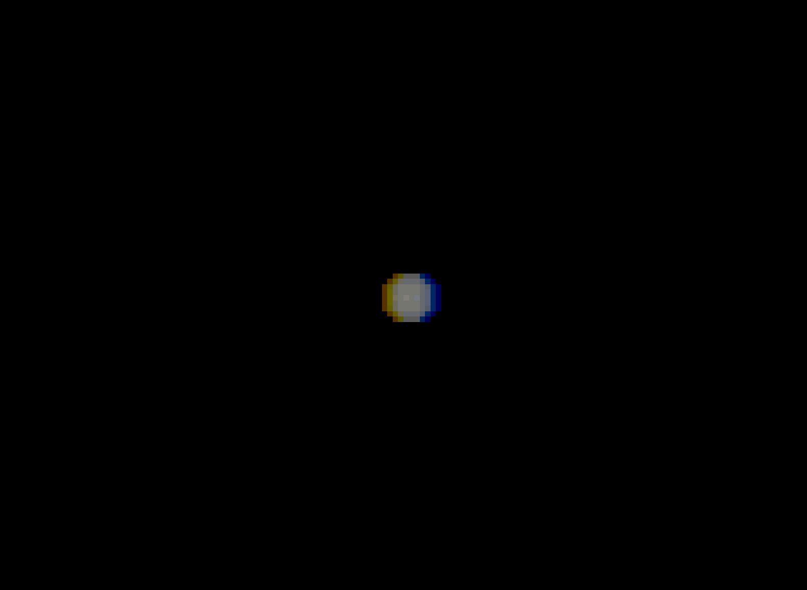

Rigid Registration of a sphere¶
This notebook demonstrates how to create, visualize, and rigid register a dataset of spherical images using the registration_tools package.
Index¶
Import the corresponding libraries¶
import os
import napari
import registration_tools as rt #Main package
import registration_tools.data as rt_data #For generating artificial datasets
import registration_tools.visualization as rt_vis #For visualization
import registration_tools.registration as rt_reg #For registration
Create an artificial dataset of spherical images¶
We will create a dataset of 10 spherical images with 3 channels.
# Create a dataset of spherical images
dataset = rt_data.sphere(
path='sphere_dataset',
num_images=10,
image_size=100,
num_channels=3,
min_radius=5,
max_radius=5,
jump=2,
stride=(1, 1, 1)
)
Visualizing¶
Initialize the napari viewer to visualize the dataset.
# Initialize the napari viewer
viewer = napari.Viewer()
and load the dataset to napari,
# Plot the images in the dataset
viewer.layers.clear() #Clear the viewer of other layers that may be present
rt_vis.plot_images(viewer, dataset)

Make video¶
Create a video from the images in the dataset.
# Make video
rt_vis.make_video(
viewer=viewer,
save_file='sphere_dataset.gif',
fps=1,
)
Register the images¶
Register the images in the dataset to correct for any misalignments.
# Register the video
registered_dataset = rt_reg.register(
dataset=dataset,
save_path='registered_sphere_dataset',
pyramid_highest_level=3,
pyramid_lowest_level=0,
registration_type='translation',
registration_direction='backward'
)
Check the correction of the registered images¶
For that, when registering, projections in each direction are performed.
Function plot shows the differences between a time t, time t+1 registered and time t+1 unregistered.
# Make video projections
viewer.layers.clear() # Clear the viewer from other images
rt_vis.plot_projections_difference(viewer, registered_dataset, 0)
rt_vis.make_video(
viewer=viewer,
save_file='sphere_dataset_projections_difference.gif',
fps=1,
)

Make video of the registered movie¶
Now that we checked that the correction is satisfactory, we can save the video.
# Make video registered
viewer.layers.clear()
rt_vis.plot_images(viewer, registered_dataset)
rt_vis.make_video(
viewer=viewer,
save_file='sphere_dataset_registered.gif',
fps=1,
)